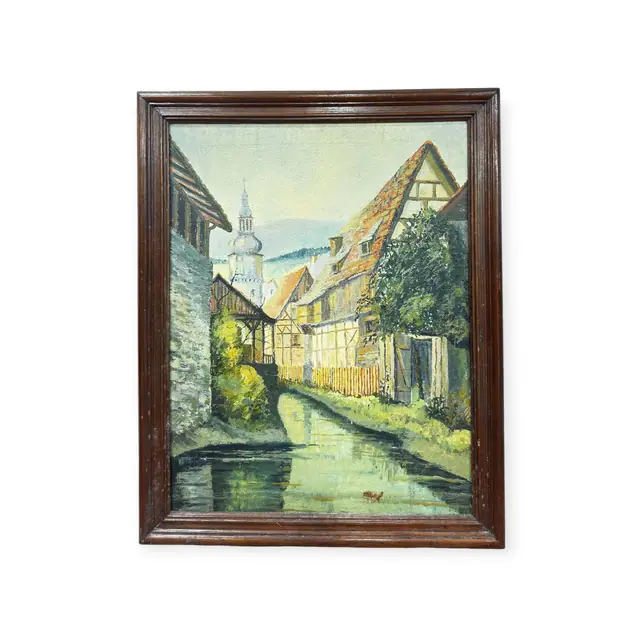
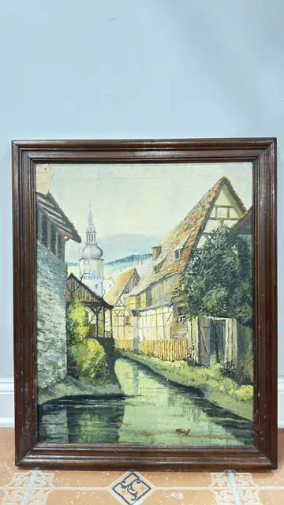
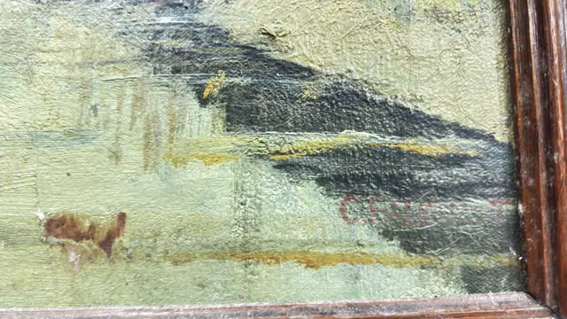

Paintings & Prints
Half-Timbered Village Canal Oil Painting, Signed, Framed
Unknown · mid 20th century
Price Upon Request



About the Item
A still green-grey waterway recedes between steep-roofed half-timbered houses, board fences and clipped shrubs toward a bulb-domed church spire and pale blue hills. The palette is chalky and muted: cream and ochre plaster, terracotta and moss-green roofs, soft blue sky, with the buildings mirrored in the water. Paint is thin and small-brushed with light impasto in the roof tiles and foliage; a fine craquelure runs across the whole surface. A small brown dog stands on the near bank at lower left. Medium: oil on canvas. Signed lower right, painted in red over the water, reading "C.FAU?ET". Condition: Fine age craquelure over the entire canvas, most visible in the sky and water; surface dirt and slight dulling; frame shows minor knocks. No tears, losses or restoration visible in the photographs.
Details
- Creator:
- Unknown
- Creation Year:
- mid 20th century
- Dimensions:
- Height: 30.5 in (77.47 cm)
Width: 24.25 in (61.59 cm)
outside of frame - Medium:
- oil on canvas
- Period:
- 20Th
- Condition:
- Offered in the condition shown in the photographs.
- Reference Number:
- VO-243
- Documentation:
- no certificate or label photographed